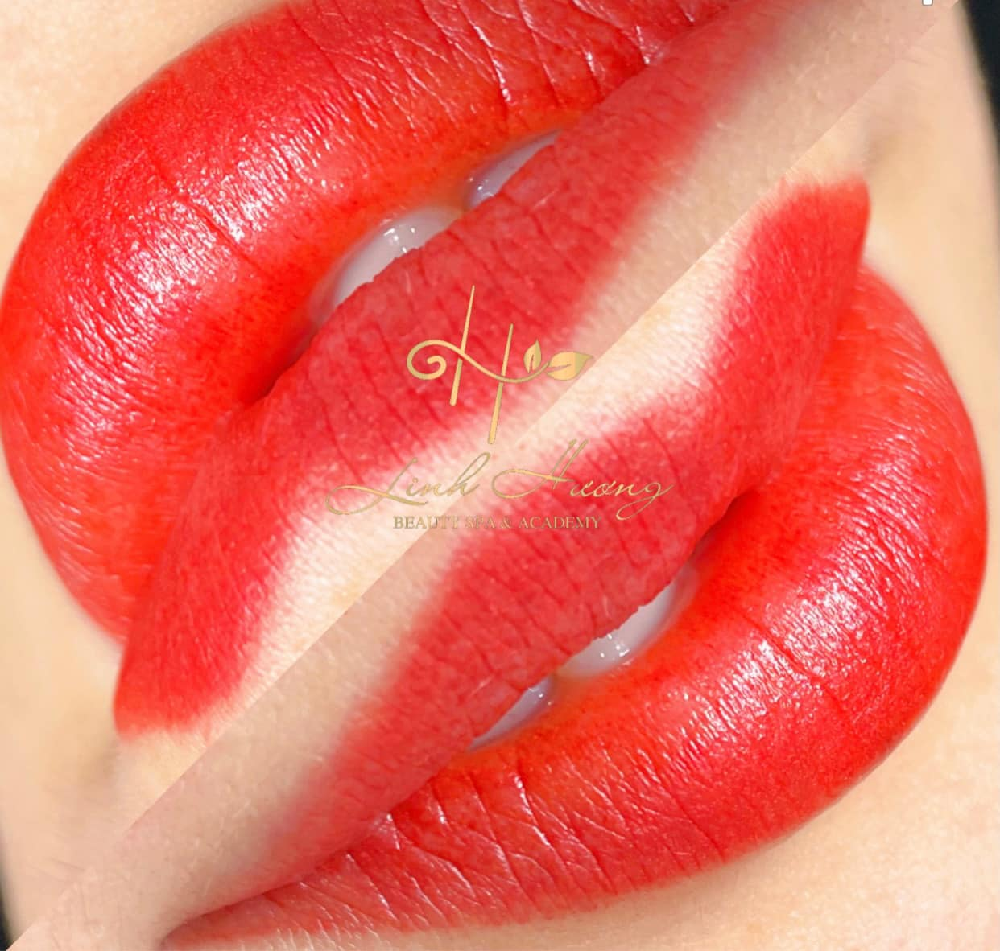
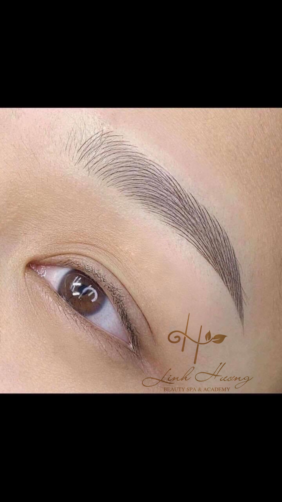
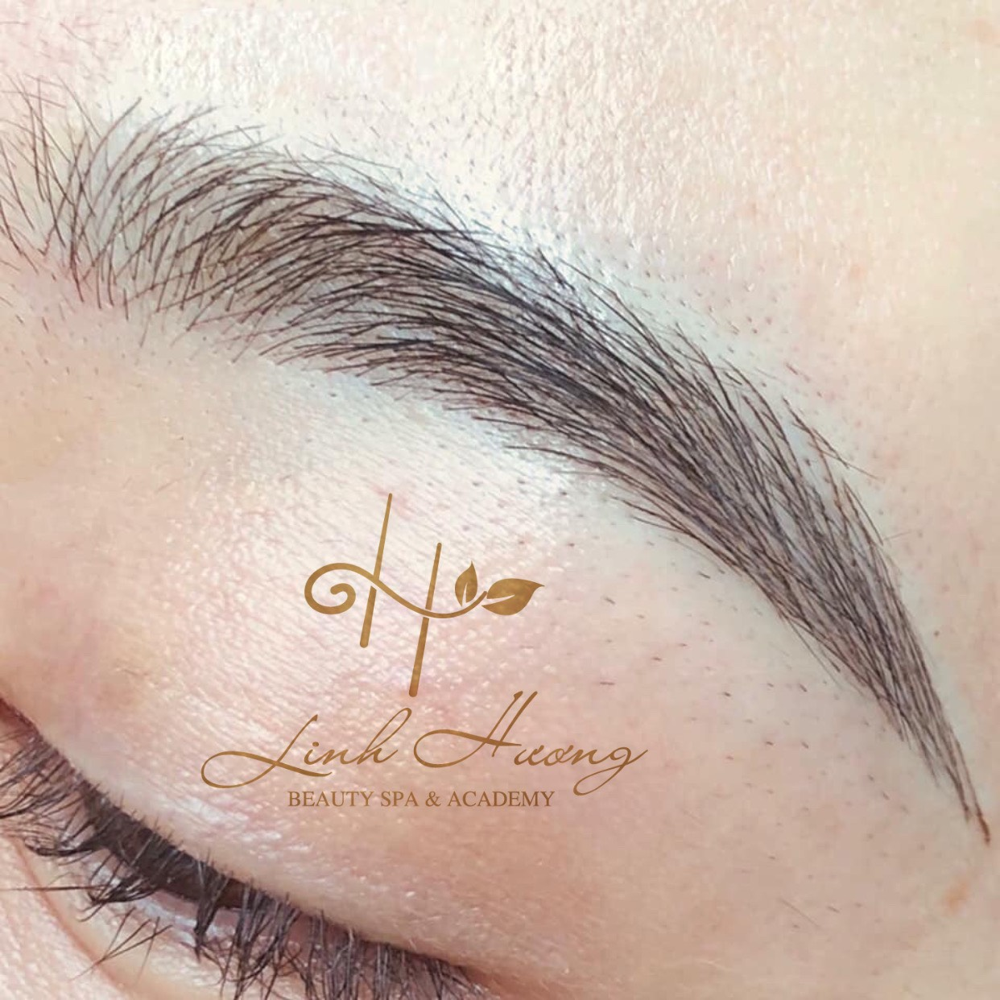
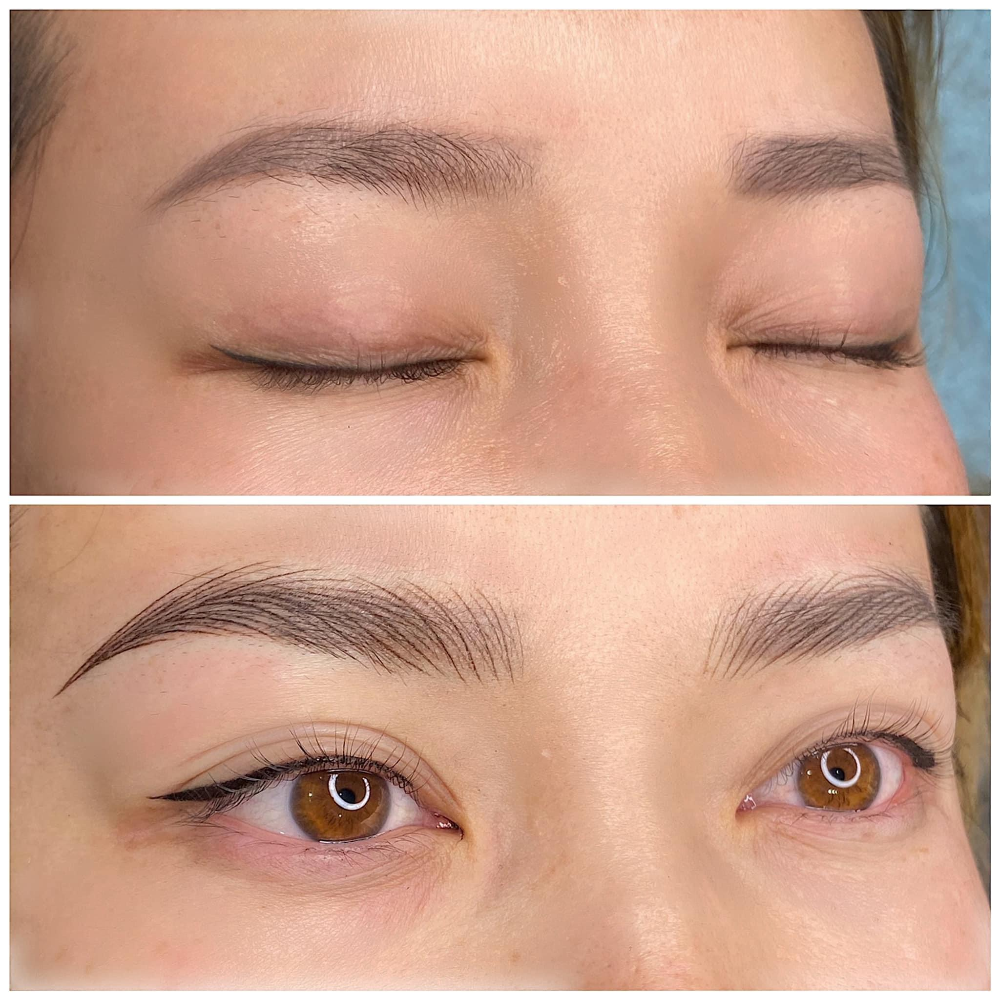

Thẩm mỹ spa Linh Hương là nơi kinh doanh chuyên về dịch vụ làm đẹp, nơi đây có tẩt cả các dịch vụ như: Chăm sóc da,massage giảm mỡ,phẫu thuật thẩm mỹ, gội đầu dưỡng sinh, phun xăm phong thuỷ thẩm mỹ.
1.Chi tiết bảng giá dịch vụ phun xăm mày môi
1.1. Phun môi baby lips
Đôi môi chính là nét đẹp gợi cảm của người phụ nữ. Bờ môi quyến rũ, cùng với nụ cười rạng ngời sẽ làm rung động, hay xuyến xao lòng người. Tuy vậy, không phải ai cũng sở hữu một đôi môi hồng xinh xắn. Hãy đến đây và sử dụng dịch vụ phun môi của chúng tôi để có một đôi môi cực xinh.
-Tiết kiệm thời gian thực hiện.
-Mịn
-Đậm
-Đều
-Tình trạng khô môi, bong tróc môi do môi thiếu độ ẩm hoặc khô môi do cơ địa được khắc phục rõ rệt
-Môi đậm màu hơn và tươi hơn, quá trình phục hồi môi nhanh hơn.
Giá dịch vụ: Giá gốc
1.800.000đ đang giảm còn
1.200.000đ
1.2. Phun môi Lipstick phủ collagens TBG
-Phương pháp giúp tạo đường nét, màu sắc mắt – môi – mày đẹp tự nhiên như thật
-Công nghệ hứa hẹn duy trì hiệu quả lâu dài, giúp chị em luôn đẹp - sang, sẵn sàng tỏa sáng.
Giá dịch vụ: Giá gốc
3.000.000đ đang giảm còn
2.100.000đ
1.3. Phun môi Leaded Lips (Thâm nhiều)
Bờ môi đậm giúp bạn có cảm giác tự tin hơn. Đặc biệt là những lúc phải đi gặp đối tác hoặc khách hàng.

Giá dịch vụ: Giá gốc
3.000.000đ đang giảm còn
2.100.000đ
1.4. Khử thâm môi Baby Doll
Thâm môi làm cho bạn mất đi vẻ đẹp tự nhiên vốn có của người phụ nữ, làm cho bạn mất ấn tượng trước mặt bạn bè, người yêu. Nó còn khiến cho bạn mất tự tin trong mọi trường hợp. Chúng tôi cam kết khử thâm môi hoàn toàn.
Giá dịch vụ: Giá gốc
1.200.000đ đang giảm còn
840.000đ
1.5. Phun chạm hạt sharding
Quy trình Phẩy Hạt Nano Sharding
– Bước 1: Thăm khám và tư vấn trực tiếp bởi các chuyên viên giàu kinh nghiệm để tìm ra giải pháp tối ưu cho khách hàng, cũng như lựa chọn màu mực phù hợp với màu lông chân mày thật của khách hàng.
– Bước 2: Tiến hành vệ sinh tiệt trùng cho vùng da thực hiện.
– Bước 3: Đo đạc, vẽ chân mày trước cho khách hàng bằng chì kẻ mày.
– Bước 4: Ủ tê khoảng 20 phút.
– Bước 5: Tiến hành sử dụng đầu bút chuyên dụng để phun vi chạm theo khuôn đã vẽ. Đầu kim sẽ di chuyển có kiểm soát nhẹ nhàng trên bề mặt da, đồng thời mực sẽ được phun ra với những đường nét tinh vi theo dạng sợi lông mày xuôi về phía cuối đuôi mắt.
Giá dịch vụ: Giá gốc
799.000đ đang giảm còn
599.000đ
1.6.Thêu chân mày 6D Ombre
Phun thêu chân mày 6D là kỹ thuật sử dụng bút phun xăm chuyên dụng với đầu bút sử dụng các vi kim siêu nhỏ chứa mực được các kỹ thuật viên tiến hành vẽ dáng lông mày lên lớp biểu bì của da.
Phương pháp này giúp bạn tiết kiệm được thời gian, công sức, chi phí sử dụng chì, phấn kẻ mày mỗi ngày

Giá dịch vụ: Giá gốc
1.200.000đ đang giảm còn
840.000đ
1.7.Tạo sợi Full Chân Mày (9D – 12D)
Là phương pháp mà các chuyên gia thẩm mỹ dùng một loại dao khắc chuyên biệt có lưỡi cực bén và nhỏ để đưa mực xăm vào da. Khắc từng sợi theo hình dáng tự nhiên của lông mày với dạng cong gần giống như sợi lông mày thật. Từng sợi lông được tạo tỉ mỉ, theo đường nét của một sợi lông mày thật. Phần đầu hơi to, nhạt, phần giữa thon nhỏ, đậm. Phần đuôi của sợi lông thì sắc nhọn đậm nét những chuốt cong.

Giá dịch vụ: Giá gốc
1.800.000đ đang giảm còn
1.260.000đ
1.8.Xử lý màu cũ trước khi làm lại
Có rất nhiều chị em phản ánh rằng sau phun lông mày, do một số các loại chăm sóc không đúng cách hoặc do dị ứng với một số các thành phần nào đó mà làm lông mày bị xăm hỏng. Do đó xử lý màu cũ trước khi làm lại là một bước hoàn toàn quan trọng.
Giá dịch vụ: Giá gốc
500.000đ đang giảm còn
350.000đ
1.9.Laze xóa sửa chân mày hư hỏng nặng
Xóa sửa lông mày hư thực ra rất đơn giản và an toàn nếu các thiết bị sử dụng, cách thức phun xăm đảm bảo được quy chuẩn. Một số người lo sợ sẽ ảnh hưởng đến da, để lại sẹo, không an toàn…nhưng điều này chỉ xảy ra với cơ sở kém chất lượng.

Giá dịch vụ: Giá gốc
1.000.000đ đang giảm còn
700.000đ
2.Mí mắt

► Quy trình phun mí mở tròng ở thẩm mỹ viện Linh Hương :
Bước 1: Xem hiện trạng mí mắt và tư vấn kỹ càng cho khách hàng.
- Người có đôi mắt nhỏ, ngắn muốn mắt trông to tròn hơn
- Người có nếp mí ngắn, thưa và không rõ ràng.
- Cặp mắt mờ nhạt, thiếu sắc nét không tạo sự cuốn hút.
- Muốn có đường viền mí sắc nét hơn khỏi mất công trang điểm.
Bước 2: Nắm được kiểu dáng, màu sắc và sở thích của khách hàng để tiến hành Phun Mí.
Bước 3: Vệ sinh và ủ tê chuyên dụng cho khách hàng.
Bước 4: Cho khách kiểm tra tất cả dụng cụ đều MỚI và RIÊNG BIỆT theo đúng quy chuẩn Bộ Y Tế
Bước 5: Sau khi chuyên viên phun xong sẽ có Giám Sát Chuyên Môn lại kiểm tra kỹ càng, tỉ mỉ từng đường kim, chi ly từng vết mực, dáng mẫu phù hợp, khi tác phẩm đẹp và chuẩn thì mới xong.
Bước 6: Dặn dò khách hàng và cấp PHIẾU BẢO HÀNH (có giá trị từ 3-4 tháng)
Với Công nghệ PHUN MÍ MỞ TRÒNG MẮT NAI mới nhất kết hợp với màu mực chiết xuất từ thảo dược thiên nhiên cùng với máy móc trang thiết bị hiện đại, chuyên viên tay nghề cao thì chất lượng từng tác phẩm luôn ở mức Đẹp Nhất.
Thời gian làm chỉ tầm 30p. Không sưng, Không đau, Không ảnh hưởng tới thị lực An Toàn tuyệt đối Đẹp tự nhiên .
3.Laser xóa xăm
1.1 . Laser nốt ruồi
1.2 . Laser nám – tàn nhang
1.3 . Laser mụn thịt
1.4 . Xóa hình xăm
Tại Linh Hương chúng tôi không cam kết xóa hiệu quả 99% cho bạn mà cam kết 90-99%. Vì:
✓ Tùy vào mực xăm của bạn là mực gì: mực tàu (xưa), mực bút, xăm xe, mực in, và một số mực xăm tự chế khác... Với các loại mực xăm này, Bạn hãy đến trực tiếp Linh Hương để được soi da và thăm khám bởi đội ngũ chuyên gia của chúng tôi sẽ có mức cam kết tốt nhất cho bạn nhé.
✓ Đối với các mực xăm hiện đại: thường xóa xăm đạt hiệu quả rất cao có thể lên đến 99%.
✓ Các mực xăm màu: Linh Hương khẳng định công nghệ cao Alpha Pro+ xóa các loại mực xăm trên với hiệu quả cao vì được xóa xăm bằng laser với bước sóng dài hơn và phải thực sự ổn định. Ngoài ra, yếu tố tay nghề kỹ thuật của chuyên gia cũng quyết định rất lớn đến hiệu quả khi xóa các loại mực xăm màu này.
✓ Và một yếu tố cuối cùng nữa là độ sâu hay nông của hình xăm:
Bạn xăm bằng công nghệ gì, máy gì, tay nghề thợ xăm thế nào…cũng sẽ quyết định đến độ sâu nông của hình xăm. Để biết được điều này Bạn nên đến trực tiếp Beryl Beauty để được kiểm tra soi da trực tiếp để đưa ra cam kết.
4.Bảng giá chăm sóc da - điều trị da
Da đã bảo vệ cơ thể trước các tác nhân của môi trường, không những thế da còn tạo nên vẻ đẹp của chúng ta.
Do đó, không có lý do gì mà bạn lại không bảo vệ và chăm sóc da thường xuyên hơn.
Linh Hương Spa khuyên bạn nên chăm sóc da để luôn giữ được một làn da khỏe mạnh, sáng mịn mỗi ngày.
Chúng tôi cam kết với các dịch vụ chăm sóc da mặt tại Linh Hương bạn sẽ hài lòng với kết quả mà chúng tôi
đem lại cho làn da của bạn.
Lợi ích về sức khỏe làn da:
1. Chăm sóc da tại Spa sẽ giúp bạn phân tích đúng đắn tình trạng da hiện tại của bạn
2. Lựa chọn phương pháp phù hợp để cải thiện làn da tốt nhất
3. Sử dụng các trang thiết bị để loại bỏ các bụt bẩn, tạp chất sâu dưới lỗ chân lông mà tay thường bạn không thể loại bỏ tại nhà
4. Chăm sóc da mặt đảm bảo độ trẻ hóa da qua các thao tác massage tại Spa
5. Giúp cải thiện độ sáng tự nhiên cho da mặt khi chăm sóc da tại Spa
Lợi ích về tinh thần cho bạn
1. Việc chăm sóc da mặt giúp giảm căng thẳng cho hệ thần kinh của bạn
2. Các chuyên gia, kỹ thuật viên sẽ giải phóng Hormone Endorphin làm cho bạn hạnh phúc và trở về trạng thái thoải mái
3. Hưởng thụ không gian và được phục vụ bởi đội ngũ chuyên viên chuyên nghiệp cũng khiến cho tinh thần của bạn được cải thiện lên đáng kể
4. Loại bỏ được những rắc rối, khó khăn khi phải tự mình chăm sóc da tại nhà
Sau khi thực hiện dịch vụ chăm sóc da tại Linh Hương, khách hàng sẽ hoàn toàn hài lòng với kết quả mang lại:
Chăm sóc làn da khỏe mạnh từ trong ra ngoài
♦ Da trở nên săn chắc, mịn màng hơn
♦ Da lên tone sáng da tự nhiên
♦ Loại bỏ các loại mụn cám, mụn đầu đen cứng đầu
♦ Loại bỏ tình trạng da kém sắc, khô ráp,..
♦ Cải thiện loại bỏ nếp nhăn, da căng bóng đầy sức sống
♦ Xua tan những căng thẳng, mệt mỏi
5.Bảng giá dịch vụ tắm trắng body - giảm mỡ
Thừa cân, mỡ bụng, đùi, bắp tay,…béo sau sinh đã khiến bạn mất tự tin, mất đi 1 phần niềm vui trong cuộc sống, một gây ra nhiều vấn đề về sức khỏe. Mỡ của bạn cứ ở mãi ở đó dù bạn dã áp dụng nhiều cách.
Trên thực tế có rất nhiều phương pháp giảm béo, nhưng không phải phương pháp nào cũng mang lại hiệu quả như mong đợi.
Nhưng cổ máy siêu giảm béo Lipo-S Burner được chứng thực là một trong những phương pháp giảm béo đem lại hiệu quả
nhanh nhất, an toàn và lành tính cho người sử dụng giảm 8-15 cm, 10Kg mỡ, đồng thời cam kết điều trị bằng văn bản.
Bùng nổ siêu ưu đãi chỉ với 300k. Hãy cho chúng tôi biết tình trạng mỡ thừa của bạn và bạn đang áp dụng phương pháp
giảm béo nào để Trung tâm tư vấn phương pháp giúp bạn đạt mong muốn giảm mỡ nhanh?
6.Bảng giá phẫu thuật thẩm mỹ tại Linh Hương
Dù là một phương pháp thẩm mỹ đơn giản, nhưng nhấn mí lại sở hữu khá nhiều ưu điểm:
Không mất quá nhiều thời gian, khoảng 30 phút.
Thủ thuật đơn giản, không đau
Thời gian phục hồi nhanh chóng
Chi phí thấp.
Tuy nhiên, bên cạnh đó phương pháp nhấn mí cũng tồn tại một số nhược điểm:
Nhấn mí chỉ hiệu quả với những người trẻ dưới 30 tuổi, mí mắt không có quá nhiều da thừa và mỡ.
Thông thường sau 2-3 năm các nếp mí sẽ mờ đi. Điều này đồng nghĩa với việc các chị em sẽ phải đi nhấn mí lần nữa.
Thẩm mỹ môi trái tim như thế nào?
Bất kì chị em phụ nữ nào cũng mong ước sở hữu một gương mặt khả ái, quyến rũ mọi ánh nhìn. Trong đó, bờ môi góp phần tạo nên sức hút cho người đối diện với nụ cười ghi đậm dấu ấn. Thẩm mỹ môi trái tim chính là con đường ngắn nhất để đưa phái đẹp tới sự quyến rũ làm điên đảo nhịp tim của phái mạnh.
Thẩm mỹ môi trái tim không đơn giản là việc cắt rạch vùng da môi. Trên thực tế, môi của con người có cấu tạo rất đặc biệt và nhạy cảm. Môi có 2 phần là mô khô và môi ướt, người làm thẩm mỹ môi trái tim phải làm sao chạm đến đường niêm mạc chính giữa 2 vùng da môi mới có thể tạo ra hiệu quả thẩm mỹ cho đôi môi.
7.Bảng giá dịch vụ gội đầu dưỡng sinh- massagefoot
- Linh Hương chuyên cung cấp các dịch vụ gội đầu thảo dược, massage body, ấn huyệt, đắp mặt nạ, ngâm chân thảo dược...
- Đến Linh Hương, quý khách được chăm sóc toàn diện giúp cải thiện sức khỏe, tái tạo làn da, phục hồi vẻ đẹp của mái tóc...
- Spa sử dụng nguồn thảo dược thiên nhiên nhằm đảm bảo sức khỏe và đem đến hiệu quả làm đẹp cao nhất cho khách hàng.
- Đội ngũ nhân viên chuyên nghiệp, tận tâm phục vụ.
- Không gian thoáng đãng, yên tĩnh, thích hợp để nghỉ ngơi và thư giãn sau những ngày làm việc căng thẳng.
8.Bảng giá dịch vụ mi –filter botox
♦ Tiêm tạo hình thẩm mỹ cho các bạn đẹp hoàn hảo theo ý muốn chỉ sau 20 phút tiêm - nắn - chỉnh. Bạn sẽ thấy ngay sự khác biệt rõ rệt: môi trên căng đầy đều đặn hài hòa với môi dưới.
Nền da môi cũng căng ẩm, mượt mà, cải thiện nét quyến rũ gấp bội phần.
♦ Không sưng, không bầm, không tác dụng phụ.
♦ Sinh hoạt bình thường ngay sau khi vừa tiêm xong (Không cần kiêng cử)
♦ Cam kết sử dụng filler chính hãng từ nhà sản xuất danh tiếng thế giới.
Để biết được các thông tin chính xác nhất về thẩm mỹ viện Linh Hương, bạn có thể tìm hiểu qua các trang thông tin:
► Fanpage: https://www.facebook.com/HuongRuby.MasterPhunMayNhanTuongHoc

Hotline :
090 203 58 96 hoặc đến chi nhánh Linh Hương gần nhất để được tư vấn và sử dụng dịch vụ!
► TP.HẢI PHÒNG: 147 Tổ 1- TT An Dương- Hải Phòng
► BÌNH DƯƠNG: 37 Nguyễn Văn Tiết - Lái Thiêu- Thuận An- Bình Dương
► TP.HCM: 660 Đường Hưng Phú, Phường 10, Quận 8, Thành phố Hồ Chí Minh, Việt Nam